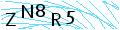

Toggle navigation
E-ÖĞRENCİ
Öğrenci İşleri
Akademik Birimler
Enstitüler
Fen Bilimleri Enstitüsü
Sağlık Bilimleri Enstitüsü
Sosyal Bilimler Enstitüsü
Fakülteler
Çorlu Mühendislik Fakültesi
Fen - Edebiyat Fakültesi
Güzel Sanatlar, Tasarım ve Mimarlık Fakültesi
Hukuk Fakültesi
İktisadi ve İdari Bilimler Fakültesi
İlahiyat Fakültesi
Tıp Fakültesi
Veteriner Fakültesi
Ziraat Fakültesi
Yüksekokullar
Beden Eğitimi ve Spor Yüksekokulu
Sağlık Yüksekokulu
Yabancı Diller Yüksekokulu
Türk Müziği Devlet Konservatuvarı
Meslek Yüksekokulları
Çerkezköy MYO
Çorlu MYO
Hayrabolu MYO
Malkara MYO
Marmaraereğlisi MYO
Muratlı MYO
Sağlık Hizmetleri MYO
Saray MYO
Sosyal Bilimler MYO
Şarköy MYO
Teknik Bilimler MYO
Rektörlüğe Bağlı Bölümler
Atatürk İlkeleri ve İnkılap Tarihi
Beden Eğitimi
Güzel Sanatlar
Türk Dili
Yabancı Diller
Araştırma ve Uygulama Merkezleri
Balkan Araştırmaları Uygulama ve Araştırma Merkezi (BALKAM)
Bilimsel Araştırma Projeleri Birimi (BAP)
-
E-BAP Sistemi
Bilimsel ve Teknolojik Araştırmalar Uygulama ve Araştırma Merkezi (NABİLTEM)
-
Laboratuvar Arama Sistemi
Deney Hayvanları Uygulama ve Araştırma Merkezi (DHUAM)
Dış İlişkiler Uygulama ve Araştırma Merkezi (NAKDİM)
Kadın ve Aile Çalışmaları Uygulama ve Araştırma Merkezi (NAKSAM)
Kariyer Uygulama ve Araştırma Merkezi (NKÜKAM)
Sürekli Eğitim Merkezi (NAKSEM)
Tekirdağ Namık Kemal Üniversitesi Hastanesi (NKÜ Hastane)
Trakya Verimlilik ve İnovasyon Uygulama ve Araştırma Merkezi (TRAVİM)
Türkçe Öğretimi Uygulama ve Araştırma Merkezi (TÖMER)
Uzaktan Eğitim Uygulama ve Araştırma Merkezi (NKUZEM)
Tasarımcı Düşünce Atölyesi (TADAT)
Akademik Takvim
Ders Katalogları
Kütüphane
İletişim
E-Öğrenci Sistemi Girişi
@nku.edu.tr

Giriş Yap
Şifremi Unuttum
Öğrenci Numarası Sorgula
Uzaktan Eğitim Sistemi
Mezun Sistemi
Diploma Sorgulama Sistemi
NKÜ Kariyer Merkezi
Kısmî Zamanlı Öğrenci Sistemi
Kurslar
Topluluklar
Haberler & Duyurular & Etkinlikler
×
Öğrenci Numarası Sorgula